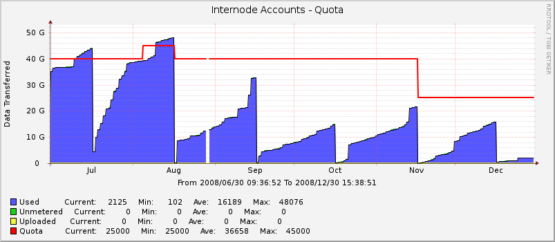

This is a template and script for Cacti to graph your quota usage for an ISP.

Download (or fork) the git repository from GitHub.
Python and the BeaitifulSoup library are required.
Copy get-isp-quota.sh into <path_cacti>/scripts/
Copy ISP_Quota.conf to /etc/cacti/ISP_Quota.conf, and change ownership and permissions so that Cacti can read it, and no other user can. Edit it to contain username and password for the ISP accounts you want to monitor.
Click on Import Templates after opening Cacti in your web browser and select the xml file.
Important: Make sure "Use custom RRA settings from the template" is selected.
Click on save to import the template.
Create a host and a graph in the usual way, supplying the index ID from the ISP_Quota.conf file.
Currently the only ISP supported is Internode.on.net, and unmetered data and uploads are set to zero until the Internode tools are updated to return this data.
Please send me patches for other ISPs; or fork my GitHub repository and make your changes there.
get-isp-quota is a Python program, and should run on Windows with minimal modification (change the location of the ISP_Quota.conf file).